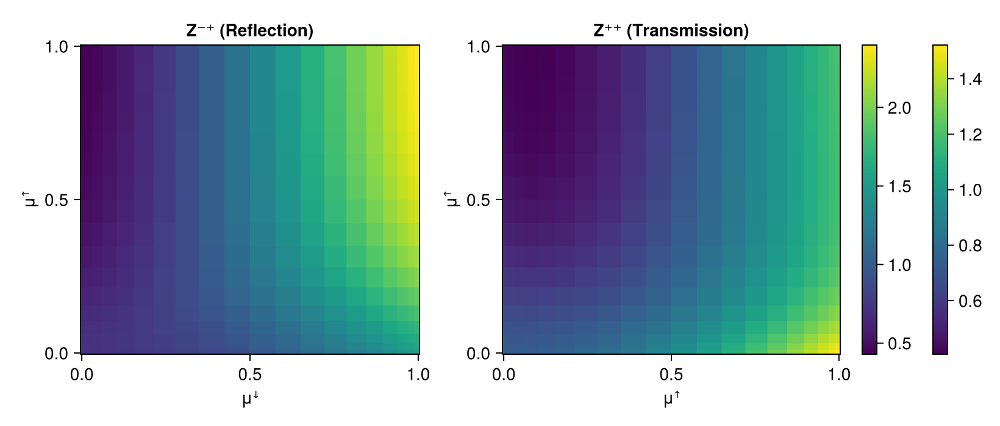
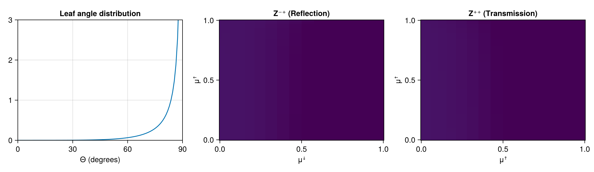

Bilambertian Canopy Scattering
Using packages:
using CairoMakie, Distributions
using CanopyOpticsCompute quadrature points:
μ, w = CanopyOptics.gauleg(20, 0.0, 1.0)([0.0034357004074525577, 0.018014036361043095, 0.04388278587433703, 0.08044151408889061, 0.1268340467699246, 0.1819731596367425, 0.24456649902458644, 0.3131469556422902, 0.38610707442917747, 0.46173673943325133, 0.5382632605667487, 0.6138929255708225, 0.6868530443577098, 0.7554335009754136, 0.8180268403632576, 0.8731659532300754, 0.9195584859111094, 0.956117214125663, 0.981985963638957, 0.9965642995925474], [0.008807003569576028, 0.020300714900193487, 0.03133602416705452, 0.04163837078835229, 0.05096505990862017, 0.059097265980759206, 0.06584431922458828, 0.071048054659191, 0.07458649323630188, 0.07637669356536293, 0.07637669356536293, 0.07458649323630188, 0.071048054659191, 0.06584431922458828, 0.059097265980759206, 0.05096505990862017, 0.04163837078835229, 0.03133602416705452, 0.020300714900193487, 0.008807003569576028])Use standard planophile leaf distribution:
LD = CanopyOptics.planophile_leaves2()CanopyOptics.LeafDistribution{Float64}(Beta{Float64}(α=1.0, β=2.768), 0.6366197723675814)Use a Bilambertian model and specify Reflectance R and Transmission T
BiLambMod = CanopyOptics.BiLambertianCanopyScattering(R=0.4, T=0.2)BiLambertianCanopyScattering{Float64}(0.4, 0.2, 30)Compute Scattering Matrices 𝐙⁺⁺, 𝐙⁻⁺ for the 0th Fourier moment:
𝐙⁺⁺, 𝐙⁻⁺ = CanopyOptics.compute_Z_matrices(BiLambMod, μ, LD, 0)([0.7160505130563537 0.7137765096648955 … 0.4254493155441406 0.42539785898428906; 0.7162444666893749 0.7135566404281769 … 0.418623324048258 0.4185714470998931; … ; 1.4994284108106506 1.4702876166106806 … 1.1808277432149328 1.1808853263287484; 1.521408135290079 1.4918357331270193 … 1.1983405469525015 1.1984036745178004], [0.7161014547369053 0.7140426863352677 … 0.42958060244153606 0.4295294076479473; 0.7165115636934574 0.7149522557758206 … 0.4402844538214355 0.4402339493638032; … ; 1.5139884740681078 1.5463657733634286 … 2.361625037474998 2.3617574381703816; 1.5361843538710676 1.5690433285570382 … 2.396667684088348 2.3968067399596857])Plots matrices (shows single scattering contributions for incoming and outgoing directions)
fig = Figure(size=(820, 350))
ax1 = Axis(fig[1,1], title="Z⁻⁺ (Reflection)", xlabel="μꜜ", ylabel="μꜛ")
ax2 = Axis(fig[1,2], title="Z⁺⁺ (Transmission)", xlabel="μꜛ", ylabel="μꜛ")
hm1 = heatmap!(ax1, μ, μ, 𝐙⁻⁺)
hm2 = heatmap!(ax2, μ, μ, 𝐙⁺⁺)
Colorbar(fig[1,3], hm1)
Colorbar(fig[1,4], hm2)
fig
Animation over different Beta leaf distributions
steps = 0.1:0.2:5
α_vals = [collect(steps); 5 * ones(length(steps))]
β_vals = [5 * ones(length(steps)); reverse(collect(steps))]
x = collect(0:0.01:1)101-element Vector{Float64}:
0.0
0.01
0.02
0.03
0.04
0.05
0.06
0.07
0.08
0.09
⋮
0.92
0.93
0.94
0.95
0.96
0.97
0.98
0.99
1.0Use Observables so the figure updates reactively each animation frame
LD_obs = Observable(LD)
pdf_obs = @lift pdf.($LD_obs.LD, x)
Z_obs = @lift CanopyOptics.compute_Z_matrices(BiLambMod, μ, $LD_obs, 0)
Zpp_obs = @lift $Z_obs[1]
Zpm_obs = @lift $Z_obs[2]
fig2 = Figure(size=(1100, 320))
ax0 = Axis(fig2[1,1], title="Leaf angle distribution",
xlabel="Θ (degrees)", limits=(0, 90, 0, 3))
ax1 = Axis(fig2[1,2], title="Z⁻⁺ (Reflection)", xlabel="μꜜ", ylabel="μꜛ")
ax2 = Axis(fig2[1,3], title="Z⁺⁺ (Transmission)", xlabel="μꜛ", ylabel="μꜛ")
lines!(ax0, rad2deg.(π * x / 2), pdf_obs)
heatmap!(ax1, μ, μ, Zpm_obs, colorrange=(0.5, 2))
heatmap!(ax2, μ, μ, Zpp_obs, colorrange=(0.5, 2))
record(fig2, "anim_fps10.gif", eachindex(α_vals); framerate=10) do i
LD_obs[] = CanopyOptics.LeafDistribution(Beta(α_vals[i], β_vals[i]), 2/π)
end
fig2
This page was generated using Literate.jl.